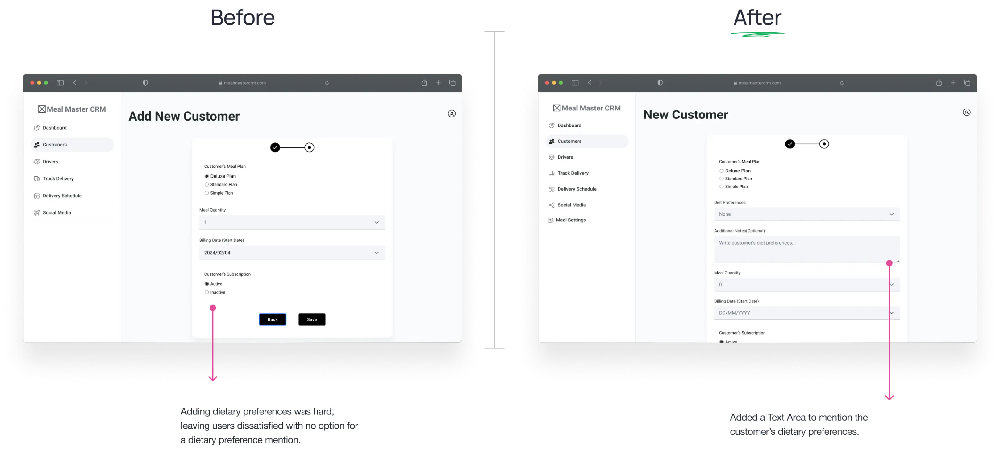
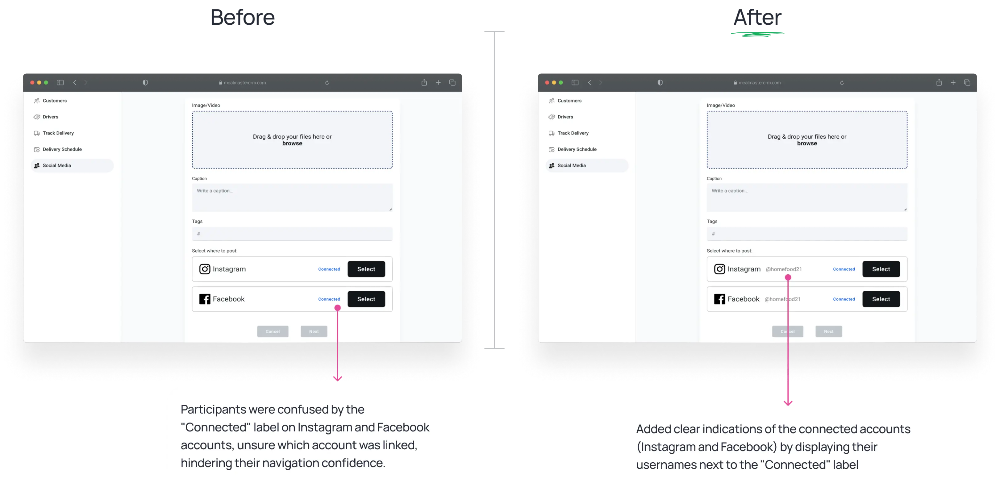
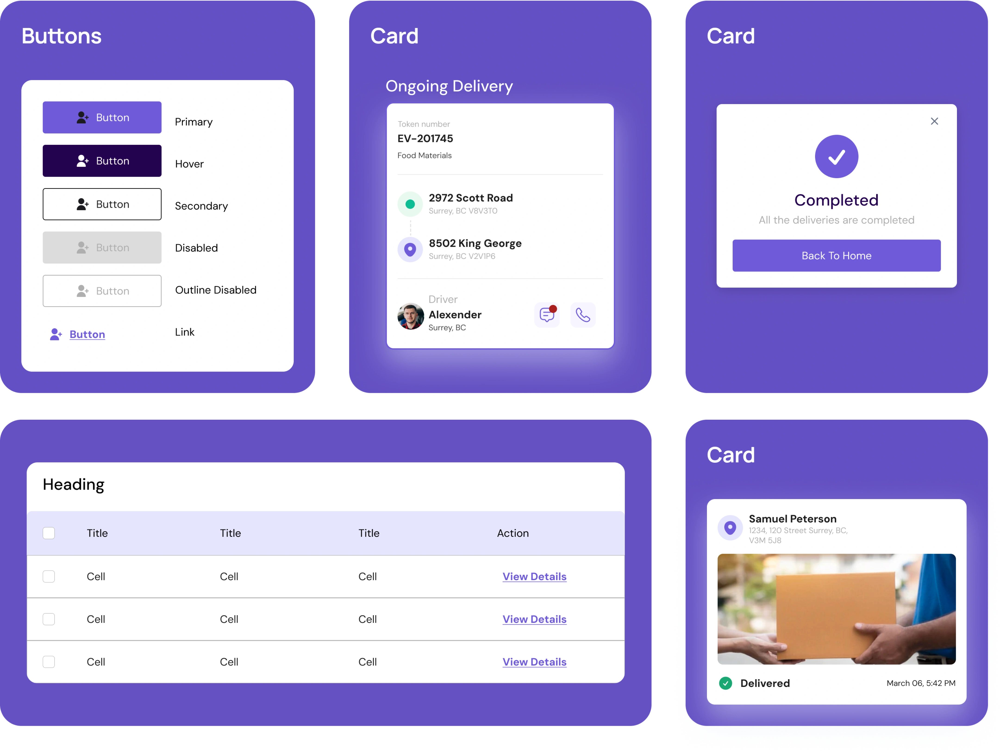

Overview
MealMaster CRM is a responsive web app, to revolutionize tiffin service management by addressing challenges like manual record-keeping and lack of tracking and analytics tools. MealMaster CRM aims to streamline customer data organization, enhance delivery tracking, and provide valuable business insights.
Team
3 Designers
Duration
12 Weeks
My Role
UX Researcher, Product Designer
Problems
- Manual record-keeping hinders organization and growth.
- No tracking system for monitoring deliveries.
- Lack of analytics tools to track customer trends.
- Difficult to manage cancellations, new subscriptions, and dietary preferences.
Solution
MealMasterCRM is a responsive web app designed to streamline record-keeping, enable efficient delivery tracking, and provide valuable analytics tools for tiffin service owners. Our extensive research ensures it meets all user needs, enhancing operational efficiency and offering insights for better decision-making.
Design Process


UX Research
User Survey
We conducted a user survey to gather insights on current challenges
and preferences.
Here are the top findings:

Digital Platform Preference
Users prefer a digital solution over manual record-keeping for managing tiffin services.
Need for Delivery Tracking
Users find it difficult to monitor deliveries without a dedicated tracking system.

Need for Analytics Dashboard
Users expressed the need for analytics to better understand customer trends.
User Interviews
We conducted user interviews to gain a deep understanding of our
audience and gather insights that helped us develop a product that
effectively addressed their needs and challenges.
Here are some of the most important questions with the answers that we
gathered.
How do you currently manage your tiffin service operations, including customer subscriptions, payments, and customer data?
“I currently manage everything manually using Excel. It's time-consuming to track customer subscriptions, payments, and changes in customer numbers.”
What challenges do you face in keeping track of customer gains, losses, and active subscriptions?
“Managing customer gains and losses is challenging, especially because I've seen a significant increase in customers recently. Keeping track of active subscriptions and ensuring timely deliveries is a struggle!”
What are the main difficulties you encounter in managing and tracking tiffin deliveries from preparation to customer receipt?
“Tracking tiffin deliveries is difficult because it's all manual. There's no synchronized system for managing orders from preparation to delivery, which leads to confusion and occasional delays.”
How do you currently handle the process of sharing offers or updates about your tiffin service on social media platforms like Instagram, Facebook, or WhatsApp?
"I use Instagram and Facebook to share our tiffin service offers. It's a hassle because I have to post the same information twice on both platforms, and sometimes also share updates through WhatsApp to reach more customers."
Competitive Analysis
Since we had no direct competitors, we analyzed other CRM systems to identify strengths and weaknesses. This revealed a significant market opportunity for us to differentiate and improve our offering.

User Persona & User Stories


UX Design
User Flow
We decided to develop a user flow to clearly outline the steps users would take to navigate through the app, ensuring an intuitive and efficient experience.

Wireframes
We decided to create wireframes to visually map out the app's structure, layout, and user navigation flow.


Usability Testing
We conducted usability testing to identify any issues users might face while interacting with the app, allowing us to refine and improve the user experience based on real-world feedback.

Usability Testing Finding 1
Users suggested that there could be a field to add a dietary preference for customer.
Usability Testing Finding 2
Lack of clear account username caused confusion.
UI Kit
We created a comprehensive UI Kit, ensuring consistency and visual coherence across all screens of the app.
UI Mockups
Detailed mockups of the app's user interface were created to visualize the final design and layout.


Prototype
Our interactive prototype allows users to experience the app's functionality and flow before the final development phase.

Learnings and Takeaways
Understanding User Needs is Crucial
Conducting user research through surveys, interviews, and competitor analysis was vital to uncovering the pain points of tiffin service providers. This research helped us identify the core functionalities required in MealMaster CRM - efficient customer data management, delivery tracking, and valuable business insights. By focusing on user needs, we ensured the product addressed their challenges and streamlined their operations.
Empathy Leads to Better Design
Putting ourselves in the shoes of tiffin service providers and delivery personnel enabled us to design a product that genuinely addresses their pain points. This empathy-driven approach ensures that our solutions are user-centric, fostering greater user satisfaction and product adoption.
Iterative Design Leads to Better Products
The iterative design process, encompassing user flow development, wireframing, usability testing, and UI design, allowed for continuous improvement. Usability testing provided valuable insights that helped us refine the user experience and address potential issues before launch. This iterative approach ensured the final product was not only functional but also intuitive and user-friendly for tiffin service providers.
The Importance of User Personas
Developing user personas like Amita (the chef) and Alex (the delivery driver) helped us understand the user base better. By empathizing with their frustrations and goals, we could design features that catered to their specific needs. Amita's persona highlighted the need for customer data organization and sales analytics, while Alex's persona emphasized the importance of delivery tracking and route optimization.
Usability Testing Uncovers Hidden Issues
Usability testing played a critical role in identifying potential roadblocks that users might encounter while interacting with the app. Findings like the need for a dietary preference field and a clear username display demonstrate the value of user testing. By addressing these issues early on, we ensured a smoother and more intuitive user experience for tiffin service providers using MealMaster CRM.